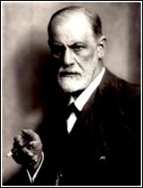

E' alquanto problematico stabilire quale fosse il rapporto di Svevo con la psicanalisi perché, se da un lato risulta evidente che questa ha occupato un posto molto importante nella sua riflessione, non si può negare che Svevo avesse un atteggiamento fortemente critico nei confronti di Freud.
Lo scrittore triestino, che aveva fatto dell'indagine sulle ambivalenze della psiche l'argomento di Una Vita e Senilità, è attratto dalle ricerche freudiane proprio da quest'interesse per i reconditi meccanismi della coscienza umana.
Sappiamo dalla sua corrispondenza privata che accettò la psicanalisi non come terapia, ma come tecnica d'indagine. Nonostante avesse avuto il cognato in cura, a Vienna, dal grande psicanalista teutonico, Svevo non condivise quindi mai quella che Freud chiamò analisi terminabile, ma incentrò il suo interesse sull'analisi interminabile, vista come uno strumento conoscitivo utile per indagare più a fondo la realtà psichica e capace quindi di divenire un ottimo strumento narrativo.
A tal proposito risulta illuminante una lettera del 10 Dicembre 1927 a Valerio Jahier nella quale Svevo afferma: "Grande uomo quel nostro Freud, ma più per i romanzieri che per gli ammalati".
Nella stessa lettera Svevo consiglia a Jahier, desideroso di curare una propria malattia nervosa, di rivolgersi alla scuola di Nancy basata sulla suggestione e l'autosuggestione, diffidando delle capacità curative della psicanalisi.
Ma Svevo si spinge oltre, fino a negare la necessità di curare la malattia e, anzi , arriva a lodare la condizione del malato. Del resto già nella Coscienza aveva scritto: "La salute non si analizza da sola, solo noi malati sappiamo qualche cosa di noi stessi". La malattia diventa quindi condizione necessaria e sufficiente per la creazione artistica, perché è un filtro che impedisce di vedere la realtà dal solito, banale punto di vista cui siamo abituati. Costringe cioè a vedere la realtà da un'angolazione straniante che permette all'inetto di capire quanto la vera malattia risieda in tutti gli altri: negli immobili borghesi e nei finti superuomini.
La vita, insomma, è lei stessa una malattia, e l'inetto ha il pregio di ammettere la sua condizione di malato mentre i cosìddetti sani sono malati senza saperlo. L'inetto è, quindi, come Svevo arriverà a dire in L'uomo e la teoria darwiniana, un abbozzo che è ancora aperto ad un'evoluzione in tutte le direzioni; frutto della selezione naturale, sopravviverà a qualsiasi situazione perchè in gardo di adattarsi adeguatamente ad ogni cambiamento.
A proposito della Coscienza, bisogna far notare come non possa essere assolutamente definito il "romanzo di una psicoanalisi". Il racconto scritto viola chiaramente la prassi psicanalitica e il dottor S. non osserva nessuna della regole basilari del trattamento. E forse, come ha notato Elio Gioanola, proprio in questo possiamo notare l'avversione di Svevo per la psicoanalisi. Così come la scrittura controllata dalla ragione è l'opposto delle teorie freudiane, così pure il dottor S(igmund?) può essere la proiezione dell'odio dell'eroe, e per questo si riduce a macchietta ridicola.
Questa visione mi sembra però un po' limitante: Svevo sembra presentarci Freud scetticamente ,ma fa del suo mito conoscitivo l'argomento del suo romanzo ed in parte lo segue.
E' del resto facile vedere la nascita dei sensi di colpa di Zeno nell'inconsistente rapporto con suo padre. Questo episodio può essere facilmente letto alla luce delle teorie di Freud ,come può esserlo pure l'episodio dei funerali di Guido. Cos'è in fondo l'errore di Zeno se non il più tipico degli "atti mancati"?
In definitiva, se è vero che Svevo seppe anticipare il suo ispiratore nelle tematiche dei primi romanzi, vero è anche il debito dello scrittore italiano nei confronti di Freud che, con le sue teorie, seppe ispirare Svevo e dargli nuovi punti di riflessione,sfociati poi in quel capolavoro che è La Coscienza di Zeno.